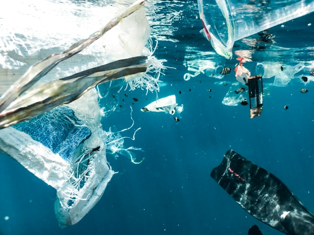

Ocean Pollution
Pollution in the ocean is a major environmental issue that affects marine life, ecosystems, and human health. It includes a variety of pollutants such as plastic debris, chemicals, oil spills, and agricultural runoff. These pollutants can harm marine animals, disrupt food chains, and degrade habitats. Efforts to reduce ocean pollution involve reducing plastic use, improving waste management, and enforcing regulations to prevent contaminants from entering the ocean.
